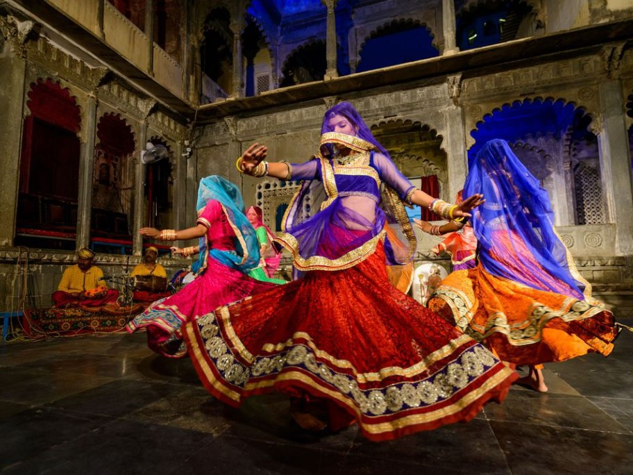

GHOOMAR

Ghoomar or ghumar is a traditional folk dance of Rajasthan. It was the Bhil tribe who performed it to worship Goddess Saraswati which was later embraced by other Rajasthani communities.[1][2][3][4][5] The dance is chiefly performed by veiled women who wear flowing dresses called ghaghara.[6] The dance typically involves performers pirouetting while moving in and out of a wide circle. The word ghoomna describes the twirling movement of the dancers and is the basis of the word ghoomar.[7][8].